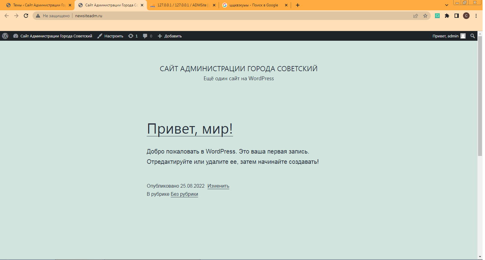

В рамках прохождения производственной практики на базе МБУ «Городской центр услуг» нашим наставником была поставлена задача установить WordPress на локальный веб-сервер, чтобы сделать новый сайт администрации города Советский.
Для установки нам понадобится архив с файлами WordPress, OpenServer;
После этого наш сайт почти готов, осталось добавить страниц и плагинов.
Рис 2.1 Главная страница сайта.
made by Smirnov Nikita and ko in 2022